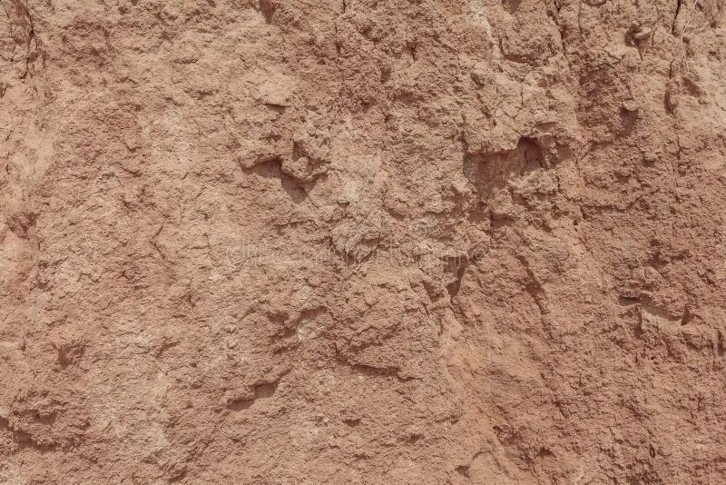
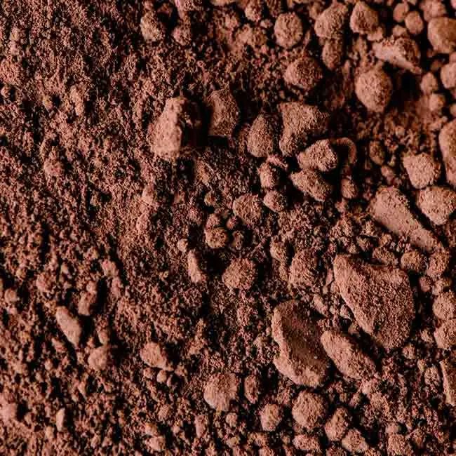

Completa la información de tu cultivo de maíz para recibir recomendaciones personalizadas.
Selecciona cómo obtener tu ubicación
Selecciona la fecha en que sembraste tu maíz
¿Cómo manejas tu cultivo?
Esto nos ayuda a darte mejores recomendaciones


Indica el nivel de pH de tu suelo.
Conéctate a internet para ver el pronóstico actual y de los próximos días.
Basado en tu ubicación de siembra
La ubicación se obtiene del paso 1. Si usaste GPS, el pronóstico cargará automáticamente.
Observa la naturaleza. Estas señales pueden ayudarte a identificar si lloverá o no.
Ten en cuenta las épocas en tu región.
Empiezan las lluvias, suelen ser moderadas y frecuentes.
Es la época más lluviosa. Lluvias fuertes y constantes.
Las lluvias disminuyen gradualmente.